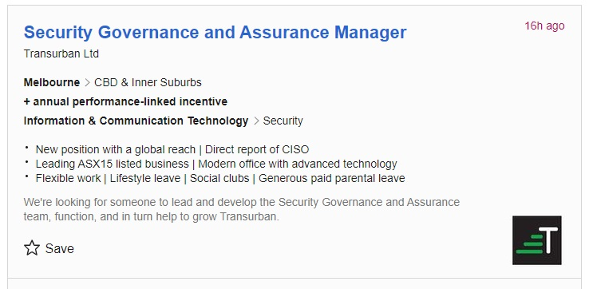

This Security Governance and Assurance Manager is responsible for developing, advising on and ensuring the adherence to policy for security governance and assurance, with reference to security frameworks but also bringing the expertise to advise the Chief Information Security Officer (CISO). This position appeals to me because of the opportunity to affect policy and outcomes and create the right security culture at a large organisation and create a fantastic skilled, cohesive and effective security team.
Clearly this is a senior management role, reporting directly into the CISO, probably with input and presentations to board required. The incumbent would need to be skilled and experienced at people management, while also bringing industry expertise in the area of security governance and assurance.
I have about 60% of the management experience I would need for this position. I am great at building work teams. A key strength is my background in Project Management and Governance. I have prepared reports for Board but always for more senior managers to present. I have reported directly into Program Managers but not to a CISO. I have nearly completed half my degree and have completed several industry training courses. I am very lacking in Security experience. A plan describing how you will obtain the skills, qualifications and experience required for the position, building on those you have now. This need not be greatly detailed, (and will probably change significantly over time anyway), but try to be as specific as you can. In order to move into a position like this I will complete my Bachelor’s degree and try to incorporate as many security courses as possible. Meanwhile I will move towards gaining some hands-on Security experience and look for mentorship. I will continue to grow my management profile in the IT industry through carefully chosen contracts. I will complete my PMP certification by October and will look for opportunities for future governance focused positions with even minor input to board to gain board input experience. I will continue my learning on team leadership and building great teams.